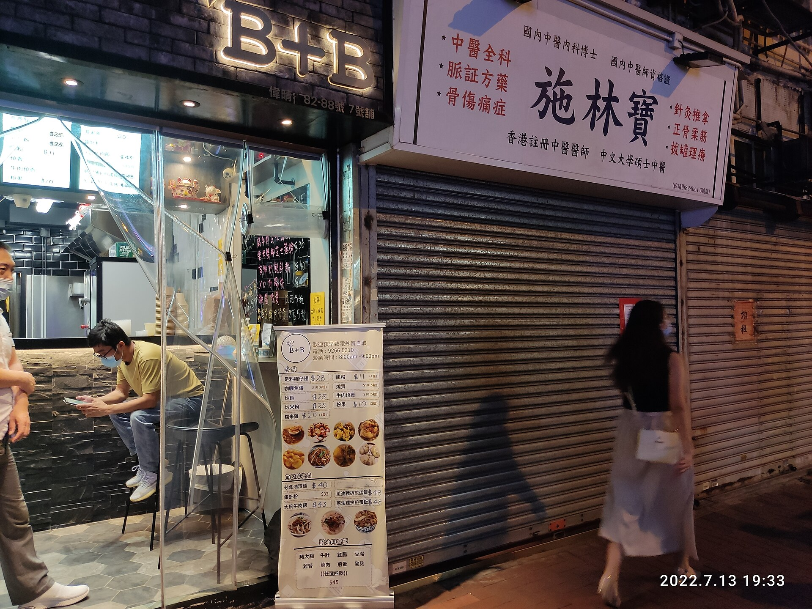

01 / 一个没有凉下来的日子
连最凉的时候，
也有 28.6°C。
2022 年 7 月 9 日，天文台记录的日最低气温是 28.6°C。换句话说，这一天的气温没有降到 28°C 以下。
日最低温达到 28°C，就被记为一个热夜。右边这一个方块，代表这一天。
“热夜”按日最低温定义，并非夜间平均温度。[1]
01 / 一个没有凉下来的日子
2022 年 7 月 9 日，天文台记录的日最低气温是 28.6°C。换句话说，这一天的气温没有降到 28°C 以下。
日最低温达到 28°C，就被记为一个热夜。右边这一个方块，代表这一天。
“热夜”按日最低温定义，并非夜间平均温度。[1]
02 / 不是只热了一晚
从 7 月 9 日到 29 日，这样的日子连续出现了 21 天，创下了当时的连续热夜纪录。
月底的雨带来了降温。7 月 30 日，最低温终于回到 28°C 以下；31 日又是一个热夜。
天文台把当月持续高温与强盛的副热带高压脊联系起来。[2]
03 / 放回整个夏天
把 6 月和 8 月也放进来，2022 年的 92 个夏日里，43 天达到热夜门槛。
但一个极端夏天，还不能回答长期发生了什么。把这个夏天留在画面里，再往前看。
下文统一比较 6—8 月，每年都是 92 天。
04 / 65 个夏天，同一份日历
每一行是一个夏天，每一个小方块仍是一天。2022 年的那段记录，现在只是其中一行。
早年的热夜更多是零星出现。近年的行里，暖色连成了更长、更密的片段。
不过，颜色的密集程度只是第一眼的印象。把每一行的热夜放到一起，数一数。
05 / 把同一批日子重新排列
让每年的热夜靠左排齐，年份依然留在原位。这次横向读到的，是数量。
两个完整的 30 年时期，平均每个夏天的热夜数从约 8 天，增加到约 25 天。
中间 5 年仍在全景中；不计入这两个比较窗口。
06 / 数量以外，还有连续性
从每年抽出最长的一段连续热夜，放到同一起点。每一行现在只保留这段连续日期，横轴随之放大。
早期 30 年里，每年夏天最长连续热夜的平均长度是 3.0 天；近 30 年变成了 6.6 天。
2022 年的 21 天很突出，但变化并不只发生在那一年。
连续长度限当年 6—8 月；若有并列最长，展示最早一段，长度统计不受影响。
07 / 不只统计越过门槛的日子
把全部夏日放回画面，再取前后两个 30 年。一天仍是一个点，按当天的最低气温排开，每组都是 2,760 天。
近年的分布向高温一侧移动。平均日最低温从 26.25°C 升到 26.87°C，相差约 0.63°C。
这并不表示每晚都比过去热 0.63°C，而是整个时期的平均差异。
08 / 同一批日子，再看白天
保持时期和温度尺不变，把每一天移到它的最高气温位置。
平均日最高温从 31.08°C 升到 31.40°C，相差约 0.32°C；最低温的同期升幅则是 0.63°C。
记录告诉我们的，不只是午后更热：一天里较凉的那一头，也在往上移。
这是两个时期的观测差异，不是对每个年份或地点的统一描述。

最后，找一个你记得的夏天